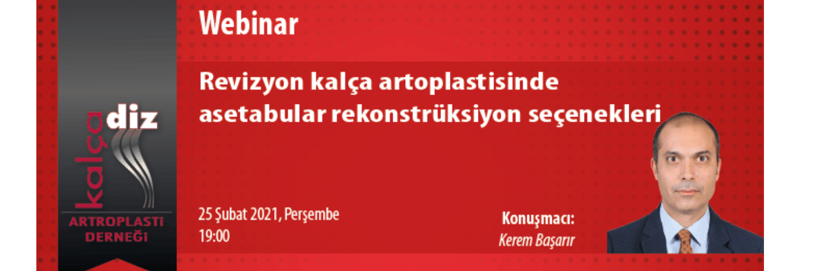

Değerli Meslektaşlarımız,
Kalça Diz Artroplasti Derneği eğitim faaliyetleri içerisinde yer alan "Webinar" oturumu 25 Şubat 2021, Perşembe günü saat 19:00'da gerçekleştirilecektir.
Moderatörlüğünü Kerem Başarır'ın yapacağı webinarda “Revizyon kalça artroplastisinde asetabular rekonstrüksiyon seçenekleri" konusu ele alınacaktır. Webinar'a http://webinar.artroplasti.org.tr adresinden, bilgisayar ve mobil cihazlarınızla bağlanabilirsiniz.
Bu eğitim yılı içinde düzenlediğimiz diğer webinarlarımızın kayıtları, portalımız www.artroplasti.org.tr üzerinden dernek üyelerimizin erişimine sunulmuştur.
Saygılarımızla,
Webinara katılmak için tıklayınız.
